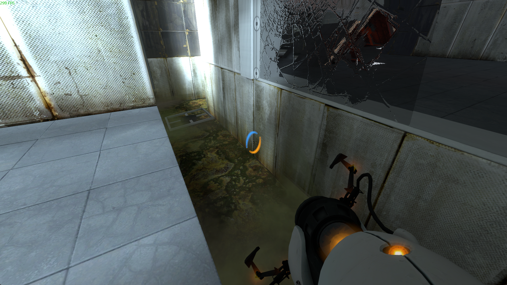

Build identification
The shared PSBR mirror index identifies the March 2010 revision as 852_1.
PSBR ↗ · community discussion, not an official build changelog
A March 2010 depot snapshot listed in the PSBR research archive. Detailed differences remain under review.
The shared PSBR mirror index identifies the March 2010 revision as 852_1.
PSBR ↗ · community discussion, not an official build changelog
The March depot still reflects the early narrative involving several personality cores, which changes substantially in later builds.
It contains a mixture of more modern Aperture interiors, early wake-up sequence work and reused experimental geometry.
Some maps require patched content or exhibit incomplete triggers and effects; compare original and repaired versions with care.
Msu3's walkthrough includes the opening, campaign material, repeated troubleshooting and optional maps.
The observations here are tied to PSBR and VCC discussion records and contemporary footage. For exact depot metadata, compare the dated Hidden Palace prototype entry ↗. Where video footage uses a patched build or a different revision, the label below identifies the difference.
Screenshots are preserved from community-server research. Each image links to its source discussion.
